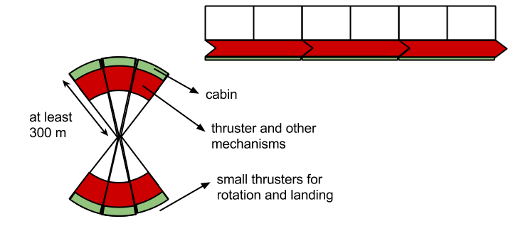

everlasting intelligence
1, everlasting intelligence
maybe in the future there would be some way to extend human lifetime
maybe strong artificial intelligence and mind uploading will be possible, in the far far future
but personally i think our natural lifetime is more or less enough for experiencing life as an individual
actually we are not our memory, so why bother to make our personal memories and feelings, immortal
considering the horrible things that some mortals have done in human history, maybe mortality of human beings isn't a bad thing
important thoughts can always be recorded, and every generation can study it and improve it, we lose our body and little memories but our more important thoughts can live for a long time, as a collective entity called human knowledge
2, language
constructed script, semantic primes, alphabet of human thought, philosophical language
'toki 'pona, 'ro artificial language, 'ithkuil, 'aui constructed language
writing exactly every sound we say, needs a lot of letters and makes the writing needlessly cumbersome, but the letters chosen below are enough to make a reasonable relationship between what you say and what you write
this approach benefits those that are learning english, but for those that have learned it already, the challenge is to get used to the new shape of words, because in fact we read by seeing the shape of words, not by reading single letters
f, v, s, z, x (pressure), xx (pleasure), tt (thought), dd (that), t, d, b, p, c (charge), j, k, g (get)
n, m, l, r, h, y (yellow), w
q (fun), a (bad), e, i, o, u (food)
apostrophe is used in the begining of special words (words which are not generic) and for connecting words
in addition there are numbers and some special symbols
tables, diagrams and drawings can be used to express some ideas in a concise and clear way
try to read the following text
kempiyuterz kan help pipel tu izili akses and impruv hyumen nqlej and az e rizqlt du ttingz tu impruv dde kuqleti uv hyumen lqyf
ddis iz wqt ejekeyxen iz ol ebawt, or at list it mqst bi
cildren kan lern simpel skilz, yuzfel in evridey lqyf
adlesents kan lern mor advansd skilz, yusfel for kenstrukting and diveleping advansd teknqlejiz
3, biological needs
at least for centuries the existence of intelligence on earth will be dependent on the survival of humans
basic biological needs are
, air i'e oxygen plus nitrogen and'or helium to adjust its density, with suitable temperature and pressure
, water ie h2'o plus some minerals to adjust the p'h
, nutrients
1, amino acids, l'lysine h'cl (3.58 g), sodium l'aspartate (6.40 g), l'leucine (3.83 g), l'threonine (2.42 g), l'isoleucine (2.42 g), l'proline (10.33 g), l'valine (2.67 g), glycine (1.67 g), l'phenylalanine (1.75 g), l'serine (5.33 g), l'arginine h'cl (2.58 g), l'tyrosine ethyl ester h'cl (6.83 g), l'histidine h'cl h2'o (1.58 g), l'tryptophan (0.75 g), l'methionine (1.75 g), l'glutamine (9.07 g), l'alanine (2.58 g), l'cysteine ethyl ester h'cl (0.92 g)
2, water soluble vitamins, thiamine h'cl (1.00 m'g), d'biotin (0.83 m'g), riboflavin (1.50 m'g), folic acid (1.67 m'g), pyridoxine h'cl (1.67 m'g), ascorbic acid (62.50 m'g), niacinamide (10.00 m'g), cyanocobalamin (1.67 m'g), inositol (0.83 m'g), p'aminobenzoic acid (416.56 m'g), d'calcium pantothenate (8.33 m'g), choline bitartrate (231.25 m'g)
3, salts, potassium iodide (0.25 m'g), potassium hydroxide (0.83 g), manganous acetate (18.30 m'g), magnesium oxide (0.38 g), zinc benzoate (2.82 m'g), sodium chloride (4.77 g), cupric acetate (2.50 m'g), ferrous gluconate (0.83 g), sodium glycerophosphate (1.67 m'g), calcium chloride 2 h2'o (2.44 g), ammonium molybdate 4 h2'o (5.23 g), sodium benzoate (1.00 g)
4, carbohydrates, glucose (555.0 g), glucono d'lactone (17.2 g)
5, fats and fat soluble vitamins, ethyl linoleate (2.0 g) a'tocopherol acetate (57.29 m'g), vitamin'a (3.64 m'g) menadione (4.58 m'g) vitamin'd (0.057 m'g)
6, other things like fiber which are not nutrient but are good for digestive system
naturally the environment we evolved in, supplies our basic needs, but it is generally unstable, slow and insufficient, considering the current population and standards of life
thus we have to build machines which can do it faster and in larger amounts
4, future cities
society is made of groups with different specialities, each group can elect their leaders
election can in fact be a simple, cheap, dynamic, and completely reliable process
the only thing we need to competely trust the result of an election, is to release the final result in a table, every one can see if his vote is entered correctly or not (votes are submited based on anonymous codes which only its owner knows of its correspondence with his name)
since the total number of voters is known, the result is completely reliable, there is no place for cheating in this method
this method is so simple and cheap that can be easily done in short periods (every month or every 3 months), actually people can vote any time they want, and the result table will be updated continuously, but the election will be made in discrete priods
now compare this simple method with what is called democracy nowadays, actually this is a clear example that shows us how the ones in power play with people and treat them like fools
autonomous car
platoon automobile
to spread beyond earth we need a gigantic craft powered by nuclear energy equipped with ion thrusters, containing enough amounts of necessary elements for air, water and food, and machines to recycle them
also there must be machines for mining elements from planets, including enough propeller matter to leave planets and navigate through space
also the craft can use the relative movement and gravity of planets to accelerate and decelerate (gravitational slingshot, gravity assist)

each segment is equipped with its own thruster, during taking off most of its volume is used for propeller matter
in the space this segments connect together as depicted below and by rotational motion they provide artificial gravity
each segment must have a mass equal to the segment at the opposite side, for example by using fluids to compensate small mass inequalities, so we have two separated regions unless of course they form a complete cylinder
artificial intelligence eliminates a lot of complexities required for sustaining biological intelligence
5, everlasting energy
everlasting intelligence needs everlasting energy
it seems that there is only one source of energy which is inexhaustible, the nucleus of abundant elements
sun
we live because of the sun, and because we are far enough from it, but this also means that the energy is dispersed on earth and to harness it we need a lot of space
concentrated solar power is a good method to do it
though instead of heating water in tubes by sunlight we can use the equivalent natural systems
1, water cycle which its use is almost saturated
2, high altitude wind, like Magenn air rotor system
energy storage
we can store energy in the electron arrangement of special materials
they are called batteries or fuels, if the released energy is electricity or heat, respectively
flow battery, regenerative fuel cell
supercapacitor
fossil fuels are how nature does this they have very good energy densities but burning them pollutes air, and their natural resources will eventually expire
biofuel is a ridiculous, and at the same time a sad lie, it leads to more hunger, and it is the most inefficient way to harness the energy of the sun
nuclear energy
imitating what happens in the sun, i'e ramming two mutually repelling nuclei together, a process called fusion, is extremely hard to confine in systems smaller than stars
currently the most common way to harness nuclear energy is by splitting a heavy nucleus apart, a process called fission, which in addition to not being an abundant energy source, is in general a very dirty process, producing a lot of highly radioactive wastes, though maybe new generation reactors can solve these problems partially at least
it would be great if we could harness nuclear energy directly and safely, because energy is the second major problem of humankind (the first is our ego)
'widom'larsen theory
it seems that clean and abundant nuclear energy might be possible, according to 'widom'larsen theory
we know that offering low momentum neutrons to nuclei of atoms initiates nuclear reactions which release energy, generally neutron capture and beta decay processes
but how can we generate these neutrons without expending more energy than the process yields
it seems that there is a way thanks to a theory by 'allan 'widom and 'lewis 'larsen
we start by processing a metal such that it can hold hydrogen the way a sponge holds water
then electrons in the metal are made to oscillate together in such a way that the electromagnetic energy stored in tens of thousands of them is transferred to a relative few, giving them enough energy to merge with nearby protons (or deuterons, if present) and produce low momentum neutrons
there is an energy cost of 0.78e6 e'v to create a neutron from a proton, lack of this energy is why there is no neutron production in usual condensed matter systems, but once the threshold is reached, calculations show that there is a robust production rate for low momentum neutrons
the hitch is creating the right oscillation, it seems that the required frequencies are in a valley of inaccessibility about 5e12 to 30e12 hertz
under exactly the right conditions i'e
, contiguous many'body monolayer patch of entangled collectively oscillating protons on a surface
, entangled collectively oscillating surface plasmon electrons
, local breakdown of 'born'oppenheimer approximation
, nonEquilibrium energy input
, and when local nanoscale electric fields in a patch exceed 2e11 volt/meter
then some number of the surface plasmon electrons located in such a patch will have high enough renormalized masses to react directly with nearby protons producing neutrons
collectively produced neutrons will have extremely large quantum wavelengths (depending on dimensions of a given patch, from around 2 nano'meters to perhaps 100 microns) and will be captured locally within picoseconds, they generally do not have enough time to thermalize which requires a few tenths of a milli'second
prompt and delayed gammas between 0.5 to 1 mega electron'volt up through 10 to 11 mega electonVolt resulting from captures or subsequent decay processes, are locally converted directly into infrared photons, by the population of unreacted, entangled heavy electrons present in a patch
producing neutrons via 'widom'larsen electroweak reactions requires a threshold minimum local electric field of at least 2e11 volt/meter, this is a typical nuclear'strength eField seen by inner electrons in un'ionized atomic nuclei, for example the electric field strength at a Bohr radius, about 0.5 angstrom away from an isolated proton is roughly 5e11 volt/meter
when 'born'oppenheimer approximation breaks down on various types of surfaces, local electromagnetic coupling between films of collectively oscillating surface plasmon electrons (e'g on metals) or p'electrons (e'g on aromatic rings, graphene, etc) and nearby collectively oscillating surface patches of protons or deuterons, can theoretically create an estimated electric field in the immediate vicinity of the patch on the order of 28.8e11 v/m, this value is well above bare minimum electric field threshold for 'widom'larsen neutron production via e*+p or e*+d electroweak reactions
some have expressed concerns that this theoretical electric field strength estimate may be unphysical in it being hard to exceed 2e11 v/m in the real world, such fears are groundless, local electrical fields > 1e11 v/m are readily created on tiny subNano to microMeter scales
'born'oppenheimer is well known to break down on metal surfaces, however the magnitude of 'born'oppenheimer breakdown may vary widely from one chemical system to another
many'body collective oscillations and mutual quantum entanglement of protons and electrons (e'g s'p electrons on metallic hydride surfaces) in conjunction with a breakdown of the 'born'oppenheimer approximation, appear to be relatively common in nature, occurring in many different types of physical systems, see these papers for example
, 'c'a 'chatzidimitriou 'dreismann "attosecond quantum entanglement in neutron compton scattering from water in the kev range"
, 'j'd 'jost "entangled mechanical oscillators"
while these many'body collective processes operate very rapidly, and nanoscale coherence can only persist for time spans of 1e-15 to 1e-18 sec, nuclear processes such as weak interaction u'l'm neutron production and neutron capture operate on even faster time scales, about 1e-19 to 1e-22 second
it is well known that metallic surface nanostructures and s'p electrons can have configurations that are able to effectively absorb electromagnetic energy over a wide area, transfer and concentrate it, and in conjunction with contiguous surface patches of collectively oscillating protons create nuclear'strength local electric fields, u'l'm neutron production can then follow
, collective oscillations and quantum entanglement of many'body patches of protons located on metallic surfaces or with hydrogenous atoms bonded to carbon atoms, in certain structural configurations (aromatic rings, fullerenes, graphene)
, creation of nuclear'strength electric fields on small length scales caused by local breakdown of 'born'oppenheimer approximation
, mass renormalization (e's'p + many'body collective field energy e*) of entangled surface plasmon electrons, or equivalently, delocalized p'electrons present in certain carbon based molecular structures, in extremely high local electric fields found in patches, once certain field'strength thresholds are surpassed, production of mostly ultra low momentum neutrons via e*+p weak reactions, can occur (also emitting electron neutrinos)
almost all u'l'm neutrons are captured locally, creating complex, dynamic neutron catalyzed l'e'n'r nucleosynthetic networks that can produce many products, and release energy
it is well known that metallic surface nanostructures and s'p'p electrons can have configurations that are able to effectively absorb electromagnetic energy over a wide area, transfer and concentrate it, and in conjunction with contiguous surface patches of collectively oscillating protons, create extremely high local electric fields
see "entangled mechanical oscillators, nature 459 2009" by 'j'd 'jost et'al, in which mechanical vibration of two ion pairs separated by a few hundred micrometres, is entangled in a quantum way
1, many'body patches of collectively oscillating protons (or deuterons) formed on metallic hydride surfaces loaded with hydrogen isotopes
2, the 'born'oppenheimer approximation breaks down in the local region above the patches, collective oscillations of the protons start to couple loosely to the collective oscillations of nearby surface plasmon polariton (s'p'p) electrons, commonly found on surfaces of metals
3, coupling between s'p'p electrons and the patches of protons increases the local electric field to values more than 10e11 volt/meter, roughly the same magnitude as electric fields seen by inner electrons in atomic nuclei
4, intense local radiation field raises effective mass of s'p'p electrons so that they can react spontaneously with nearby protons or deuterons to create neutrons
5, neutrons created collectively have huge quantum mechanical wavelengths (microns) and are almost always absorbed locally by nearby nuclei
6, heavyMass s'p'p electrons in condensed matter systems have the unique ability to directly absorb a gamma photon and re'radiate it as a collection of much lower energy infrared and soft x'ray photons, as a result, l'e'n'r systems have built'in gamma shields that preclude external emission of hard radiation in the form of mega e'v gamma rays
in a nutshell, the plasmon modes in hydrated metals (think of them as surface electrons that all act together) get energized (many ways to do this) and get absorbed by protons, this produces very low energy neutrons which get absorbed quite easily by anything
this starts a cascade of creating unstable isotopes which beta decay, during the beta decay, gamma ray photons are released, but when they hit that metal plasmon they get shifted into mostly infrared with a soft x'ray tail
the challenge is that this phenomena requires very high energy densities, order of 1e11 volt/meter, so it more often will happen in small nanoCrevices in materials
1, in condensed matter, local breakdown of the 'born'oppenheimer approximation occurs in homogeneous, many'body, collectively oscillating patches of protons found on surfaces of fully loaded metallic hydrides, 'born'oppenheimer breakdown enables a degree of electromagnetic coupling of surface proton oscillations with those of nearby surface plasmon polariton (s'p'p) electrons
2, such coupling between collective oscillations creates local nuclear'strength electric fields in the vicinity of the patches
3, s'p'p electrons bathed in such high fields increase their effective mass, thus becoming heavy electrons
4, heavy app electrons can react directly with protons located in surface patches, through an inverse beta decay process that results in simultaneous collective production of a neutron and a neutrino
5, collectively produced neutrons are created ultra cold, that is they have ultra low momentum and extremely large quantum mechanical wavelengths, and absorption cross'sections compared to typical neutrons at thermal energies
6, heavy s'p'p patch electrons are uniquely able to immediately convert almost any locally produced or incident gamma radiation, directly into infrared heat energy, thus providing a form of built'in gamma shielding for the nuclear reactions
on the surface of a metallic hydride cell with surface plasmon polariton modes, protons collectively oscillate along with the electrons, hence the 'born'oppenheimer approximation which assumes that the proton is rigidly fixed, breaks down and should not be employed
in other words, neutron production is the result of collective electromagnetic coupling caused by breakdown of the 'born'oppenheimer approximation that occurs between two types of intrinsically collective oscillations found on metallic hydride surfaces
1, surface plasmon polariton (s'p'p) electrons (which determine colors of metals)
2, contiguous, coherent surface patches of protons or deuterons that can form on hydrogen loaded hydrides
such coupling helps to create very high local fields greater than 10e11 volt/meter that can renormalize masses of polariton electrons above threshold for ultra low momentum neutron production
elements heavier than iron are thought to be created via nucleosynthesis reactions (neutron capture and subsequent beta decays of unstable neutron'rich isotopes) in stars
two types of such neutron capture processes thought to occur in hot stellar plasmas
, s'process (slow) occurs in stars (e'g red giants) with neutron flux 10e5 to 10e11 cm^2/sec
, r'process (rapid) occurs in supernova explosions with neutron flux greater than 10e22 cm^2/sec
according to 'widom'larsen similar processes occurs in condensed matter l'e'n'r systems where neutron flux can be 1e9 to 1e16 cm^2/sec
the difference is that neutrons in l'e'n'r systems can be ultra low momentum and thus have vastly larger absorption cross'sections
since 1989, certain researchers in l'e'n'r have documented genuine anomalies that occur in various types of heavy and light hydrogen experimental systems, all involving heavily loaded metallic hydrides
1, production of a broad array of different stable isotopic transmutation products
2, different types of nuclear effects triggered by electrical current, laser, r'f, and pressure
3, calorimetrically measured excess heat effects in wide range of values from just milliWatts to tens of watts in some cases
4, production of helium isotopes, rarely detect tritium
5, production of modest fluxes of mega e'v alpha particles and protons, as well as some minuscule fluxes of low energy x and gamma ray photons (no fluxes of hard mega e'v gammas)
the best experimental evidence for 'widom'larsen theory is this
simple two'parameter optical model of u'l'm neutron absorption based on 'widom'larsen theory of l'e'n'r predicts 5 peaks for product isotopic abundance, which matches very well with experimental results
mass spectroscopy probably the best analytical technique for diagnosing presence of l'e'n'r by the early to mid 1990s maverick l'e'n'r researchers, located at a smattering of major universities and national laboratories in 'japan, 'russia, 'italy, and the 'united 'states, were already doing competent before'and'after analyses of experimental l'e'n'r devices, using various types of mass spectroscopy and (mainly at conferences) reporting the appearance of many new elements not initially present at the beginning of experiments, and'or substantial isotopic shifts in stable isotopes of elements initially present that could not reasonably be explained by contamination, and'or the action of prosaic chemical isotopic fractionation processes
some apostate l'e'n'r researchers using s'i'm's to assay isotopes post'experiment, were even able to spatially correlate elemental or isotopic anomalies, with distinctive morphological features observed on post'experiment metallic device surfaces
unusual structures found at such locations often consisted of micron'scale craters and other odd morphologies indicative of locally explosive flash melting or boiling events
see 'george 'miley "distinctive 5 peak ni/h2'o transmutation product mass spectrum" published in 1996 (mostly s'i'm's and neutron activation analyses data)
why is the sun's corona so much hotter than the sun's surface, this coronal heating problem is still an unresolved problem of physics, can it be because of low energy nuclear reactions discussed above
see these papers by 'a 'widom and 'l 'larsen